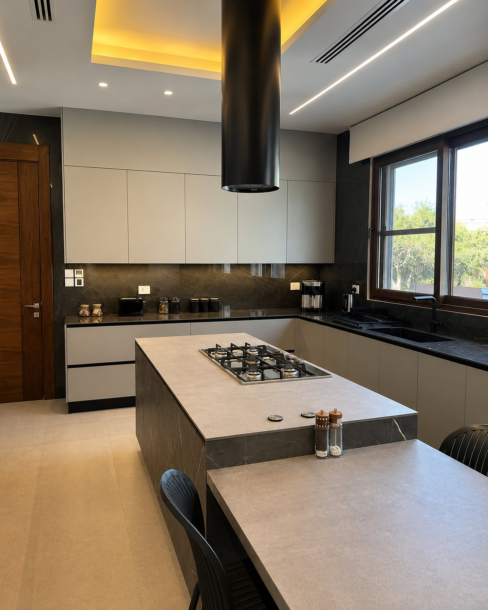
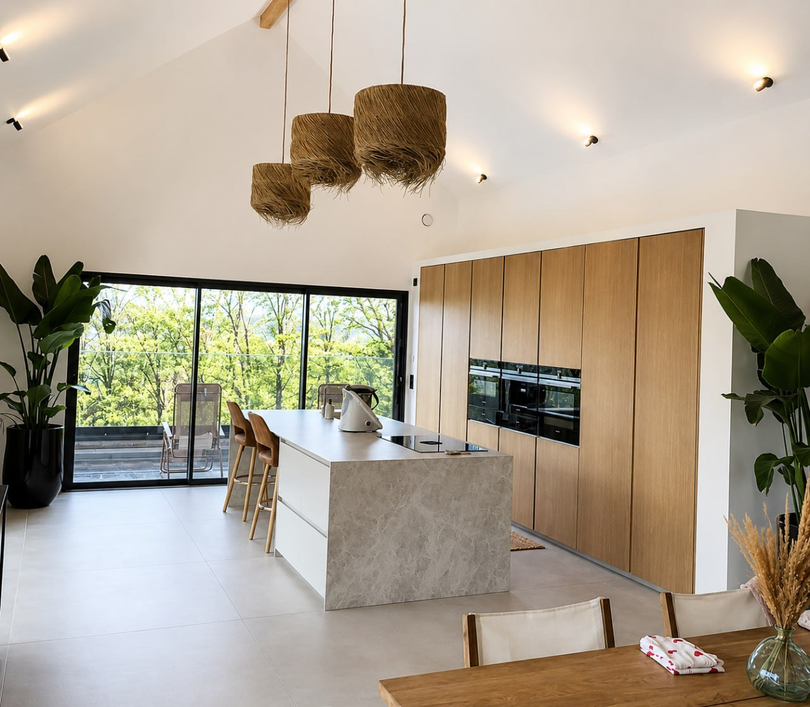
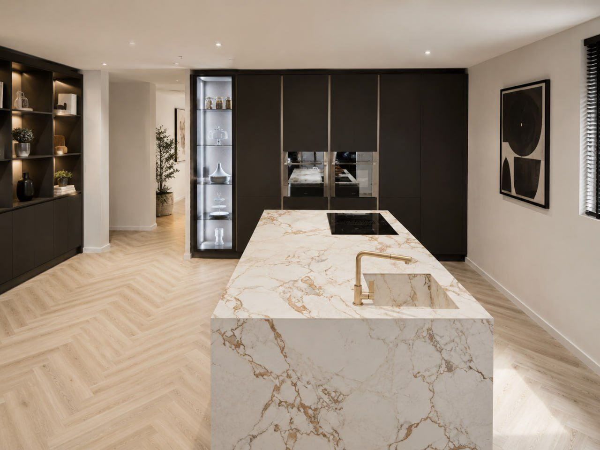

Des aménagements sur mesure uniques
Choisir Cuisines Factory, c'est choisir l'équation parfaite entre savoir-faire européen et accompagnement sur mesure. Depuis plus de 20 ans, nous concevons et fabriquons tous nos meubles pour vos aménagements intérieurs. Nous faisons de chaque projet une réalisation sur mesure pour faire de votre espace de vie un lieu unique, comme vous.
Découvrez nos collections
Inspirez-vous, de la cuisine au dressing jusqu'à la création de meubles sur mesure.
Nos charnières et tiroirs proviennent de la marque autrichienne Blum, le N°1 mondial des solutions de ferrures :
- Systèmes de portes relevables
- Systèmes de charnières
- Systèmes coulissants
- Conçu pour une durabilité inégalée afin de garantir un usage fluide de votre cuisine.


Privilégiez le savoir-faire suisse
Avec plus de 500 réalisations à notre actif, vous avez la garantie d'être conseillé et accompagné jusqu'à trouver la conception parfaite pour votre future cuisine équipée. Nous sommes également spécialisés dans la cuisine sur mesure, adaptée précisément à vos besoins et à votre espace. La mise en œuvre de votre projet sera ensuite confiée à notre équipe de professionnels aguerris, avec qui nous entretenons une collaboration étroite.